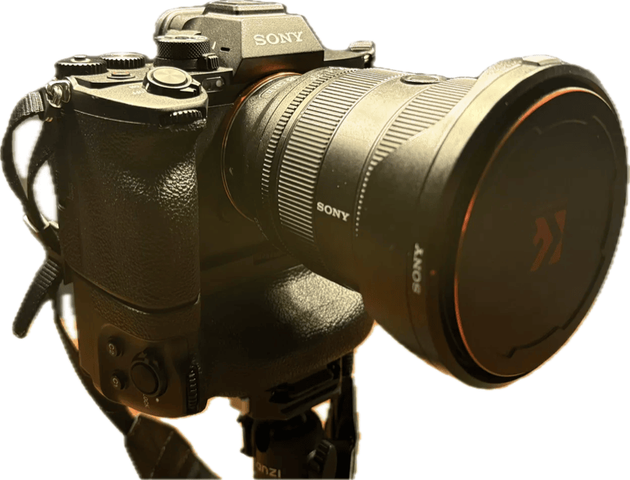

Sony A7R V
Mein Begleiter für draußen

Belichtungsrechner
▸So benutzt du den Rechner
- Ablesen: Trag unter „Messung“ ein, was deine Kamera gerade anzeigt – Blende, Zeit und ISO aus dem Sucher.
- Ändern: Stell unter „Neue Einstellung“ den Wert um, der dir wichtig ist – zum Beispiel eine kleinere Blendenzahl für einen unscharfen Hintergrund.
- Übertragen: Die App zieht einen anderen Wert automatisch nach, damit das Bild gleich hell bleibt. Diese Werte stellst du an der Kamera ein.
Grüner Hinweis heißt: Die Helligkeit stimmt. Roter Hinweis heißt: Die Kamera kann nicht weiter, das Bild würde heller oder dunkler.
Messung (was die Kamera zeigt)
Neue Einstellung
Filter-Rechner
82-mm-Magnetset passt direkt an
- SEL1635GM2 (82 mm)
- SEL2470GM2 (82 mm)
Hinweise
- Fokus und Messung vor dem Aufsetzen dunkler ND-Filter, danach auf MF.
- GND8 nicht mitrechnen – dunkelt nur den Himmel ab (ca. 3 Stufen oben).
- Black Mist 1/4: praktisch kein Lichtverlust.
- Langzeit-RM an: Kamera rechnet danach noch einmal gleich lange (Dunkelbild).
- Über 30 s: Modus M, Zeit über 30″ hinaus → BULB, mit Fernauslöser halten.
Objektive
| 16-35 GM II | 24-70 GM II | 90 Macro G | 100-400 GM | |
|---|---|---|---|---|
| Modell | SEL1635GM2 | SEL2470GM2 | SEL90M28G | SEL100400GM |
| Lichtstärke | F2.8 durchgehend | F2.8 durchgehend | F2.8 | F4.5–5.6 * |
| Kleinste Blende | F22 | F22 | F22 | F32 |
| Filtergewinde | 82 mm | 82 mm | 62 mm | 77 mm |
| Naheinstellgrenze | 0,22 m (AF) 0,19 m (MF) | 0,21 m (24 mm) 0,30 m (70 mm) | 0,28 m (1:1) | 0,98 m |
| Bildstabi | nein – nur IBIS | nein – nur IBIS | OSS + IBIS | OSS + IBIS |
| mit SEL14TC | passt nicht | passt nicht | passt nicht | 140–560 mm F6.3–8 kleinste F45 Naheinst. unverändert |
| Filtersatz | 82-mm-Set direkt (Set 1 + 2) | 82-mm-Set direkt (Set 1 + 2) | Step-up 62→82 | Step-up 77→82 |
* 100-400: ca. F4.5 bis 135 mm, F5 bis 250 mm, darüber F5.6. Mit SEL14TC jeweils eine Stufe dunkler (F6.3 / F7.1 / F8). Der Telekonverter passt von deinen Objektiven nur ans 100-400.
A7R V + VG-C4EM
Speicherplätze (Moduswahlrad 1 / 2 / 3)
1 · Landschaft
| Modus | A · F8 |
| ISO | Auto 100–3200 |
| Fokusmodus | AF-S |
| Fokusfeld | Spot M |
| Motiverkennung | aus |
| Bildfolge | Einzelbild |
Warum so? F8 macht von vorne bis hinten scharf. AF-S reicht, weil nichts weglaufen kann. Spot M, weil ich selbst bestimme, worauf es ankommt – meist der Vordergrund. Motiverkennung aus, damit die Kamera nicht plötzlich auf einen Vogel springt.
2 · Schnappschuss / Wildlife
| Modus | A · F5.6 |
| ISO | Auto 100–12800 |
| Fokusmodus | AF-C |
| Fokusfeld | Breit |
| Motiverkennung | an · Tier/Vogel |
| Bildfolge | Serie Hi |
Warum so? F5.6 lässt genug Licht herein und hält das Tier trotzdem ganz scharf. AF-C folgt der Bewegung, Breit plus Tier-/Vogelerkennung findet das Auge von allein. Serie Hi, weil der richtige Moment nur Sekundenbruchteile dauert.
3 · Wenig Licht
| Modus | A · F4 |
| ISO | Auto 100–12800 |
| Fokusmodus | AF-C |
| Fokusfeld | Spot M |
| Motiverkennung | an |
Warum so? F4 holt viel Licht herein, ohne dass die Schärfe zu knapp wird. ISO darf bis 12800 steigen – lieber etwas Korn als ein verwackeltes Bild. Spot M, weil der Autofokus im Dunkeln sonst leicht danebengreift.
Fokusfeld verstehen
Fokusfeld = wo im Bild die Kamera scharf stellt
- Breit
- Kamera sucht selbst aus. Für Schnappschüsse und Tiere mit Motiverkennung.
- Feld
- Ich lege einen mittelgroßen Bereich fest, darin sucht die Kamera.
- Mitte fix
- Immer die Bildmitte. Gut für den Anfang: Motiv in die Mitte, Auslöser halb drücken, halten, Bild ausrichten, abdrücken.
- Spot S / M / L
- Kleiner Punkt, den ich mit dem Joystick verschiebe. Ich bestimme genau, was scharf wird. Für Landschaft und Makro.
- Erweiterter Spot
- Wie Spot, nimmt bei Bedarf die Umgebung dazu.
- Tracking
- Verfolgt das Motiv. Nur mit AF-C. Für Tiere und Vögel in Bewegung.
Faustregel: Steht still → Spot M. Bewegt sich → Breit oder Tracking mit Motiverkennung.
Tasten
| C1 | Belichtungskorrektur |
| C2 | Fokusfeld |
| C3 | Fokusmodus |
| C4 | Fokuslupe |
| Fokushaltetaste (Objektiv) | Motiverkennung |
Kursbegriff → Sony
| Kurs | A7R V |
|---|---|
| Matrix / Mehrfeld | Multi |
| Selektiv | Mitte oder Spot |
| Integral | Bildfeld-Durchschn. |
| Sportmessung | gibt es bei Sony nicht |
| Blendenautomatik | Modus S |
| Zeitautomatik | Modus A |
| Programmautomatik | Modus P |
| Manuell | Modus M |
Menüpfade
| Speicherplatz sichern | Aufnahme › Aufnahmemodus › Kamera-Einst.-Speicher → 1/2/3 |
| Speicherplatz abrufen | Moduswahlrad auf 1, 2 oder 3 |
| Belichtungskorrektur | Belichtung/Farbe › Belichtungskorr. › Belichtungskorr. |
| ISO / ISO Auto Min–Max | Belichtung/Farbe › Belichtung › ISO → ISO AUTO, dann nach rechts: Min./Max. |
| Messmodus | Belichtung/Farbe › Messung › Messmodus |
| Fokusmodus | Fokus (AF/MF) › AF/MF › Fokusmodus |
| Fokusfeld | Fokus (AF/MF) › Fokusfeld › Fokusfeld |
| Motiverkennung | Fokus (AF/MF) › Motiverkennung › Motiverk. bei AF / Erkennungsziel |
| Fokuslupe | Fokus (AF/MF) › Fokus-Assistent › Fokusvergrößerung |
| Bildfolge | Aufnahme › Bildfolgemodus › Bildfolgemodus |
| Tasten belegen | Einstellung › Bedienungsanpassung › Ben.-def. Key/Wählr.-Einst. |
| SteadyShot | Aufnahme › Bildstabilisierung › SteadyShot |
| Langzeit-RM | Aufnahme › Bildqualität › Langzeit-RM |
| Verschlusstyp | Aufnahme › Verschluss/Lautlos › Verschlusstyp |
| BULB | Modus M, Zeit über 30″ hinaus drehen |
Bezeichnungen können je nach Firmware leicht abweichend abgekürzt sein.
Version 9
Spickzettel
Was bewirkt was
Blende
Zeit
ISO
A7R V: ISO 100–32000 normal, 50 und bis 102400 erweitert.
Startwerte nach Motiv
Startpunkte – je nach Licht anpassen.
Hausaufgabe
Aus dem Kurs: Wo finde ich das an meiner A7R V?
Rad-/Tastenbelegung = Werkseinstellung, an der Kamera prüfen.
1Zeit einstellen▸
2Blende einstellen▸
Wichtig: 16-35 GM II und 24-70 GM II haben einen Blendenring – der muss auf „A“ stehen, sonst gilt der Ring. 100-400 und 90 Makro: nur über die Kamera.
3Empfindlichkeit (ISO) einstellen▸
Menü: Belichtung/Farbe › Belichtung › ISO.
ISO AUTO mit Min./Max. (nach rechts).
4Fokuspunkte / Fokusfelder ansteuern▸
Punkt verschieben: mit dem Multi-Selector (Joystick) oder per Touch auf dem Display.
Fokusfeld = wo im Bild die Kamera scharf stellt
- Breit
- Kamera sucht selbst aus. Für Schnappschüsse und Tiere mit Motiverkennung.
- Feld
- Ich lege einen mittelgroßen Bereich fest, darin sucht die Kamera.
- Mitte fix
- Immer die Bildmitte. Gut für den Anfang: Motiv in die Mitte, Auslöser halb drücken, halten, Bild ausrichten, abdrücken.
- Spot S / M / L
- Kleiner Punkt, den ich mit dem Joystick verschiebe. Ich bestimme genau, was scharf wird. Für Landschaft und Makro.
- Erweiterter Spot
- Wie Spot, nimmt bei Bedarf die Umgebung dazu.
- Tracking
- Verfolgt das Motiv. Nur mit AF-C. Für Tiere und Vögel in Bewegung.
Faustregel: Steht still → Spot M. Bewegt sich → Breit oder Tracking mit Motiverkennung.
5Matrix-/Mehrfeldmessung▸
Menü: Belichtung/Farbe › Messung › Messmodus › Multi.
Schneller: Fn-Taste › Messmodus.
6Selektivmessung▸
7Spotmessung▸
Tipp: Der Spot-Messpunkt kann mit dem Fokusfeld gekoppelt werden – Belichtung/Farbe › Messung › Spot-Messpunkt › Fokusfeldverknüpfung.
8Integralmessung▸
9Blendenautomatik▸
10Zeitautomatik▸
11Manuelle Belichtungssteuerung▸
Die Belichtungsskala (M.M.) im Sucher zeigt die Abweichung in EV.
12USB-Stick mit 10 eigenen Bildern▸
Einfach erklärt
Alle Fachbegriffe der App in Alltagssprache.